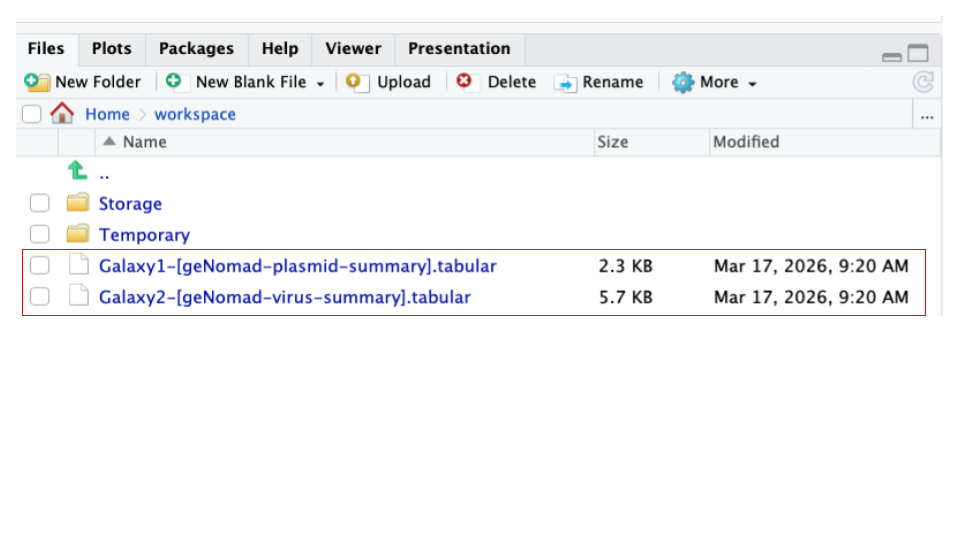
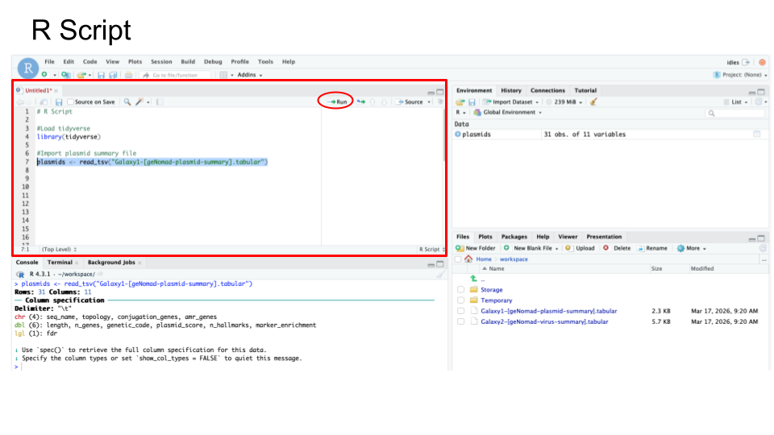

8.3 Activity: RStudio
8.3.1 Purpose
The purpose of this activity is to introduce the RStudio environment on SciServer for importing, exploring, filtering, and visualizing genomic data. Students will gain hands-on experience working with real bioinformatics output files (geNomad plasmid and virus summaries) and get a taste or foundational data analysis skills using R.
8.3.2 Learning Objectives
By the end of this activity, students will be able to:
- Data import and environment setup
- Load tabular data files into R/RStudio using functions such as read_tsv()
- Navigate and use the RStudio interface, including file upload and script execution
- Data exploration and manipulation
- Explore datasets using basic R commands (e.g., viewing objects, inspecting column names)
- Sort and filter data using base R and tidyverse functions (e.g., sort(), filter(), %>%)
- Identify and subset biologically relevant data (e.g., contigs with AMR genes, non-provirus viral contigs)
- Data visualization and reproducibility
- Create and customize basic data visualizations using histogram plots in R (e.g., modifying titles and colors)
- Write, annotate, and organize reproducible R scripts for data analysis workflows
8.3.3 Activity 1 – Import files to RStudio on SciServer
Estimated time: 10 min
8.3.3.1 Instructions
- Download files.
- Download two geNomad output files from Galaxy history below - plasmid summary and virus summary.
- The files correspond to geNomad output for Zymo gut standard D6331 subset:
- Launch RStudio on SciServer.
- Log into https://sciserver.org.
- Navigate to SciServer ‘Compute’ (one of the cards on the bottom of the page).
- Click “Create container”.
- Give your container a name (eg. RStudio)
- In the “Compute Image” drop-down menu, select
Bioconductor 3.17 (RStudio) - Hit the green ‘Create’ button on the bottom.
- Click on the ‘RStudio’ Name to open RStudio window.
- Upload files to RStudio on SciServer.
- Navigate to the
Filespane located in the lower-right panel of the RStudio. - Click the ‘Upload’ button in the toolbar of the Files pane.
- Click ‘Choose File’ to upload the two geNomad output files (you previously downloaded in Step 1 - uploading one at a time.
- You should now see two downloaded files in your ‘Files’ pane.
- Navigate to the

- Load files into R/RStudio.
- Create a new file to store your R code by opening the File menu, selecting New File, and then R Script
- Enter the following two R commands into the new top left window of RStudio
- Load the R package called ‘tidyverse’ by entering the command library().
- Import a file of interest by using the function read_tsv().
- See code block below to load the file “Galaxy1-[geNomad-plasmid-summary].tabular” and store it as a new object (variable) called e.g. ‘plasmids’.
library(tidyverse) plasmids <- read_tsv("Galaxy1-[geNomad-plasmid-summary].tabular") - Highlight both commands and then click ‘Run’.
8.3.4 Activity 2 – Explore files in RStudio on SciServer
Estimated time: 10 min
8.3.4.1 Instructions
- Use basic R commands to explore imported files in RStudio.
- Craft your commands using an R Script - you will be asked to provide your R Script code.
- Include all commands you used
- Annotate all commands you used
- See sample R Code below:

Your R Script for Activity 2 should include:
# Part 1: Plasmids
### Explore object
<your commands>
### Explore column names
<your commands>
### Sort file based on plasmid length, from high to low
<your commands>
### Filter file to only include contigs with detected AMRs (amr_genes)
<your commands>
# Part 2: Virus
### Explore object
<your commands>
### Explore column names
<your commands>
### Sort file based on virus length, from high to low
<your commands>
### Filter file to exclude Provirus
<your commands>8.3.4.3 Part 1 - Explore geNomad plasmid summary file in RStudio
View your imported plasmid file by typing in the name of your object - plasmids.
plasmids
| Question: How many plasmid contigs (rows) are in your file? |
|---|
View column names using function colnames().
colnames(plasmids)
| Question: Copy and paste column names below. |
|---|
- Sort plasmid contigs based on decreasing length, using function sort().
- Store as a new object called “sorted”;
- After sorting, to view the ‘sorted’ object, type ‘sorted’.
- Note: the sort() command is a function from the base R package. It is available in R without installing any special libraries.
- Your command will contain the following components:
sorted <-– assigns the result of the operation to a new variablesort()– the function used to do the sortingplasmid$length– points to the “length” column in the plasmids objectdecreasing = TRUE– specifies that sorting should be descending rather than the default ascending.
Use these commands:
sorted <- sort( plasmids$length, decreasing = TRUE )
sorted| Question: What is the length of the largest contig length in a file? This should be the 1st number? |
|---|
- Filter plasmid contigs using the filter() function to retain only those that contain antimicrobial resistance (AMR) genes (amr_genes column); For this, you will need to remove the missing values (NA). Once filtered, view the filtered contigs by calling on the ‘filtered’ object.
- Store as a new object called “filtered”;
- After filtering, to view the ‘filtered’ object, type ‘filtered’.
- Note: We use the
dplyrfilter() function and the %>% pipe operator in the example below, which are both part of the tidyverse ecosystem of package - a popular extension in R, and is not a base R function.- So, you can mix and match functions from different packages!
- Note: We use the
- Your command includes the following operations:
%>%– is an operator that sends the output data from one command as the input data into the next commandfilter()– this function selects rows based on a condition!=– is the “Not equal to” operator
Use these commands:
filtered <- plasmids %>% filter (amr_genes != "NA")
filtered| Question: How many plasmid contigs had an AMR gene? |
|---|
8.3.4.4 Part 2 - Explore geNomad virus summary file in RStudio
- Use commands you learned in Part 1 above, as a guide to explore virus summary file.
- View your imported virus file by typing in the name of your object.
| 1A: Type your command below. |
|---|
| 1B: How many virus contigs (rows) are in your file? |
|---|
- View column names using function colnames().
| 2A: Type your command below. |
|---|
| 2B: Copy and paste column names below. |
|---|
- Sort virus contigs based on decreasing length, using function sort(). Provide your commands and answer the question below.
- Store as a new object called “sortedV”;
- After sorting, to view the ‘sorted’ object, type ‘sortedV’.
| 3A: Type your commands below: |
|---|
| Command 1: |
| Command 2: |
| 3B: What is the largest contig length in the file? |
|---|
- Filter viral contigs using filter() function to all viral contigs EXCEPT those identified as “Provirus” (topology column); For this, you will need to eliminate the “Provirus”.
- Store as a new object called “filteredV”;
- After filtering, to view the ‘filtered’ object, type ‘filteredV’.
| 4A: Type your commands below: |
|---|
| Command 1: |
| Command 2: |
| 4B: How many viral contigs were NOT classified as Provirus? |
|---|
8.3.5 Activity 3 – Plot and modify histogram of contig lengths
Estimated time: 10 min
8.3.5.1 Instructions
- Use base R commands to plot and modify histogram in RStudio
- Continue to add this code to your R Script.
8.3.5.3 Part 1 - Plot histogram of plasmid lengths
- Plot histogram of plasmid contig lengths using function hist() and specifying the length column.
- Your histogram will appear in the Plots tab (bottom right)
Use this command:
hist(plasmids$length)| 1A: Paste resulting plot below. |
|---|
Modify your histogram by changing the title to “Plasmid Length Distribution” Use this command:
hist (plasmids$length, main = “Plasmid Length Distribution”)
| 2A: Paste resulting plot below. |
|---|
- Modify your histogram by changing histogram color to lightblue.
Use this command:
hist ( plasmids$length, main = "Plasmid Length Distribution", col = "lightblue" )| 3A: Paste resulting plot below. |
|---|
8.3.5.4 Part 2 - Plot histogram of virus lengths
- Plot histogram of viral contig lengths using function hist() and specifying the length column
- Your histogram will appear in the Plots tab (bottom right)
| 1A: Type your command below: |
|---|
| 1B: Paste resulting plot below. |
|---|
- Modify your histogram by changing the title to “Virus Length Distribution”
| 2A: Type your command below: |
|---|
| 2B: Paste resulting plot below. |
|---|
- Modify your histogram by changing histogram color to ‘lightgreen’.
| 3A: Type your command below: |
|---|
| 3B: Paste resulting plot below. |
|---|
8.3.5.5 Part 3 - Copy and paste your R Script below, which should be structured as follows:
# Import files into R Studio
### Plasmids
<your commands>
### Virus
<your commands>
# Explore imported files
### Plasmids
<your commands>
### Virus
<your commands>
# Plot histogram of lengths
### Plasmids
<your commands>
### Virus
<your commands>| Paste your R Script below. |
|---|